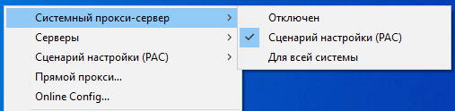

Здравствуйте.
Внесли в реестр. Перестал работать pac-скрипт. Что-то можно сделать (про VPN знаю)?
{kind=link}
Да, на части провайдеров не будет скачивать лист и соединяться с прокси. VPN продолжают работать.
Попробую что-нибудь сделать, но не сегодня.
- А можно как год назад что-то поменять (тогда порт вроде бы добавили в URL) для восстановления?
- Скачать этот pac-файл и использовать его локальную копию можно?
Понятно.
А можно этот скрипт скачать или получить по какой-то другой ссылке себе на жесткий диск? С российского IP не открывается, с зарубежного ошибка GeoIP.
Может на github пора заливать ?
* Тип настройки: PAC-файл / браузерное расширение
* Тип проблемы: перестали открываться все заблокированные РКН ресурсы (по крайней мере, те, которые я посещаю).
* Что с сайтами: по http и по https вместо сайта открывается страница-заглушка, по некоторым https – ошибка «PR_CONNECT_RESET_ERROR»
* Используемый браузер: Firefox (Антизапрет подключён ссылкой на его прокси в настройках браузера).
* Операционная система: Windows 7 Максимальная (официальная купленная версия).
• Провайдер: Эр-Телеком (Дом.ру).
Сегодня, в районе 9 часов московского времени все заблокированные РКН сайты перестали у меня открываться посредством использования как Антизапрета, так и Censor Tracker. Впервые столкнулся с тем, что даже вместо адресов https выскакивает страница-заглушка. Так понимаю, что это связано с описанным выше. Очень надеюсь и жду, что автору Антизапрета удастся что-нибудь с этим сделать.
Tor пока работает, но медленно и печально, откуда и пишу.
Вероятный фикс конкретно для Обхода блокировок рунета (к сожалению не могу сказать точно, ибо меня на er telecom проблема судя по всему пока в принципе не коснулась)
(к сожалению не могу сказать точно, ибо меня на er telecom проблема судя по всему пока в принципе не коснулась)
Соль в том что автор также пишет
У меня несмотря на блокировку адресов *.prostovpn расширение всё равно не сломалось, так что я допускаю, что мне просто повезло, и фикс подойдёт не всем.
Я и есть автор, но допускаю, что гайд поможет кому-либо - жду тестов со стороны.
Я и есть автор
Ха, не заметил…
Пишите отклик, помогло ли кому-то.
По https://antizapret.prostovpn.org:8443/proxy.pac получил ошибку Your geoip is not RU, contact antizapret@prostovpn.org if you believe this is an error при проксировании всего prostovpn.org через локальный тор, но сам антизапрет пока работает.
Добавил апдейт в гайде по расширению, рассказал про режим антицензорити на случай, если гайд не прокнул.
Я ничего не делал, ибо ничего в этом во всём не понимаю, но у меня после очередной перезагрузки всё заработало. Я боюсь пока проявлять радость, хотя вроде и не суеверен, но пока всё работает (я имею ввиду, под Антизапретом).
Мне так не повезло. С середины дня отвалилось. Попробовал через Open VPN, (вместо pac-а), но он даже не подключается. тайм аут тупо. И на телефоне, кстати.
Логи есть?
В качестве решения напрашивается перенос прокси с заблокированного домена (по возможности, на какой-то не очевидный другой домен/адреса).
Адреса же для скачивания pac-файла просто сразу подключать через прокси (убрать блокировку скачивания для иностр. ip)
Разделение запросов через серверный трюк не работает у 86% провайдеров. Нестандартный порт у 20%. (все проценты условны). Прокси не будут работать даже с локальным pac файлом. И это без блокировок серверов, которые возможно уже в процессе.
OpenVPN.log (2.5 KB)
https://cloudflare-ipfs.com/ipfs/QmWEMqFKTQjiX6J8biNUKAmq2wqrShoU1tXZ2bQPxx5Cy8/proxy-ssl.js
Путем использования модифицированного pac-файла (по ссылке ниже) с локальными прокси или через pac-файл антицензорити (с локальными прокси) всё работает.
Есть какие-нибудь инструкции о том, как этим пользоваться? (желательно как можно более простым языком)
Насколько это сложно, по сравнении с обычным pac-файлом?
Всё в целом тоже самое, только нужен локальный http или socks5 (ShadowSocks) прокси через который пойдёт трафик до заблокированных узлов, т.е вместо прокси используемых в pac-файле антизапрета, будут использоваться ваши собственные.
Вот этот вот вопрос непонятен от слова совсем. Я слишком уж простой пользователь. Нет ли каких-либо инструкций для создания этих локальных прокси http или socks5 (ShadowSocks) прокси?
Ваш клиент пытается подключиться к заглушке от провайдера. Попробуйте поменять используемый DNS сервер.
1.1.1.1 стоял изначально, пробовал и дефолтный (который провайдер выдает), он в логах скорее всего
пробовал гугловский 8.8.8.8 тоже самое, таймаут
ps
ipconfig /flushdns делал
а где эта ошибка вылазит, в каких логах?
Если зайти с зарубежного ip по адресу https://antizapret.prostovpn.org:8443/proxy.pac, то будет ошибка.
я так понял нужен прокси сервер за рубежом, а уже к нему клиент? или что значит “локальный”?
Ваш провайдер перехватывает DNS трафик и подменяет ответ.
Спойлер
Server: 8.8.8.8
Address: 8.8.8.8#53
Non-authoritative answer:
Name: antizapret.prostovpn.org
Address: 78.29.1.40
Name: antizapret.prostovpn.org
Address: ::ffff:78.29.1.40
Server: 8.8.8.8
Address: 8.8.8.8#53
Non-authoritative answer:
Name: ntc.party
Address: 78.29.1.40
Name: ntc.party
Address: ::ffff:78.29.1.40
Да, например shadowsocks, клиент которого слушает на 127.0.0.1:1080
а есть пример хорошего клиента для винды где это можно настроить?
- Пишете сгенерировать вам готовый VPN-сервер у этих ребят:
Следуете шпаргалке у тех же ребят. Сохраняете себе конфигурацию(и) для Outline. Она подходит для Shadowsocks для Windows (и не только)
- Далее устанавливаете Windows-клиент Shadowsocks:
Копируете в него ранее сохраненную конфигурацию для Outline.
- В настройках Shadowsocks-клиента указываете “Удаленный PAC” и указываете ссылку на удалённый PAC-файл отсуда - GitHub - onminonA/proxy.pac: RU-PAC file anti-censorship in Russian Federation
Включаете в Shadowsocks-клиенте режим “Сценарий настройки (PAC)”

У меня опять ничего из заблокированного не открывается. Почитал общение выше и практически ничего не понял. М-да, печаль. Буду надеяться и ждать изменения ситуации от хозяина проекта.
мой пров тоже грешен блокировкой антизапрета, нужно зарыть урл где-нибудь на российском облаке
а можно в Shadowsocks-клиенте указать локальный скаченный PAC? То есть я возьму и скачаю его к себе на комп.
И потом добавлять свои сайты туда? Или он и так много весит и новые сайты не добавить. Тогда можно ли указать список PAC файлов в клиенте?
Ну т.е мой провайдер тупо оверрайдит DNS?
Я могу что-то с этим со своей стороны сделать? Я не очень хорошо в компьютерных сетях разбираюсь.
Локальный PAC присутствует, без указания стороннего пути. Вносить изменения в оригинал.
Не надо ничего читать, я же первым из всех сделал готовый гайд и указал на основные проблемы. Через расширение всё отлично работает, не надо никакие shadowsocks скачивать, это для тех, кому нужна локалка.
В рамках расширения как минимум антицензорити на торе не отвалился а его простому человеку хватит почти для всех нужд.
Вы явно переоценили мою (и подобных мне) способность понимать Вашу терминологию. Ваш гайд (это, видимо, инструкционное сообщение) мне также практически непонятен. И спешу Вас уверить, что из пользователей Антизапрета таких, как я, значительное большинство, а некоторые даже ещё более дремучие. Извините.
Разве скачать тор и подключиться к нему не значительно легче чем прописывать в реестре множество значений, ставить шэдоусокс, отдельно скрипты скачивать?
Если просто хвататься за голову и говорить что ничего непонятно то конечно ничего работать не будет.
Использовать антицензорити это сейчас официальная рекомендация от разработчиков расширения а не просто чьи-то непонятные гайды.
Сегодня и до меня дошла блокировка. На текущий момент помогла смена DNS на гугловские.
@Colourban, попробуйте и вы выставить dns 8.8.8.8 и 8.8.4.4, возможно вам поможет, а особых знаний не нужно 
У меня через open vpn пока всё работает, а вот роутер к vpn чего-то подключаться не хочет.
У меня в принципе антизапрет не ломался, но на адреса prostovpn не пускало, без понятия почему.
локальный PAC будет работать параллельно с удаленным? Или только один из них.
“Вносить изменения в оригинал.” - это вносить изменения в локальный PAC?
iCloud, спасибо, но мне, к сожалению, смена DNS на гугловские не помогла.
Опять же, если нет необходимости заходить на сайты, у которых стоит внутренняя блокировка тора, то по гайду нужно использовать антицензорити на торе.
Там всё расписано пошагово.
Подключается либо локальный PAC, либо удалённый PAC, одновременно использовать оба PAC не возможно.
Да
А я пару часов назад сказал ZIP-архив для Linux и там строка выглядит как remote v.thenewone.lol
Этот файл уже недействителен?
Да, лучше сменить.
ValdikSS, ОГРОМНОЕ СПАСИБО!!! Все сайты опять доступны и работают быстро!
У обхода блокировок рунета также вышла тестовая версия 1.63 где были применены изменения:
Я сменил на v.31337.lol к Антизапрету подключился но сайты не открываются.Скачал новый VPN-файл с ним не подключаеться совсем к Open vpn.роутер кинетик 1210. провайдер квант телеком
Настройки на стороне сервера не менялись никакие. Разница только в домене.
в новом файле вот эта строка появилась setenv opt data-ciphers AES-128-GCM:AES-256-GCM:AES-128-CBC
Возможно ли заменить proxy-nossl.antizapret.prostovpn.org:29976 ?
не открываються сайты RuTracker.org Классический форум-трекер :: NNM-Club Русские каналы смотреть онлайн трансляцию в прямом эфире бесплатно
Он на честном слове работает, падает от малейшего шороха. Перезапустил.
UPD: обновил, сейчас должно быть без перебоев.
Проблем не вижу ни на одном сервере. Проверяйте у себя.
А что мне надо у себя проверить? Помогите пожалуста! Вот такие ошибки
Ошибка при установлении защищённого соединения
При соединении с rutracker.org произошла ошибка. PR_CONNECT_RESET_ERROR
Код ошибки: PR_CONNECT_RESET_ERROR
Страница, которую вы пытаетесь просмотреть, не может быть отображена, так как достоверность полученных данных не может быть проверена.
Пожалуйста, свяжитесь с владельцами веб-сайта и сообщите им об этой проблеме.
Работает. Спасибо.
Проверяйте настройки DNS прежде всего. Заведите новую тему, если вам нужна помощь.
Сейчас заработало!в браузере отключил DNS через HTTPS
Спасибо!!!
Очень быстро, спасибо! У меня даже не успело отвалиться, так что ничего и не трогаю. Взял новый конфиг для подстраховки.
А для Кинетика есть обновлённый конфиг? А то тоже сайты не открываются… По ходу дела провайдер тоже блокирует новую ссылку.
кто нибудь может подсказать куда класть VPN-файл и PAC для расширения на Chrome? В папке расширения нет ни того ни другого. Или эти файлы для чего то другого?
Это для прописывания адреса PAC-скрипта в настройки ОС или браузера без использования расширения. Для расширения была выпущена тестовая версия: Release Новые адреса для АнтиЗапрета. Последний релиз в формате Manifest V2 · anticensority/runet-censorship-bypass · GitHub.
VPN-файл – это для OpenVPN. Инструкции см. на https://antizapret.prostovpn.org:8443/.
del
Увы, у кучи знакомых мне людей не работает ни прежний URL, ни новый. Провайдеры\операторы связи разные…
Роскомнадзор решительно и окончательно сломал Антизапрет или все же может быть найдено решение, которое бы работало без беготни по разным доменам? Готов на это донатить.
В данный момент у меня и с сервера, на котором нет никаких фильтров, p.thenewone.lol:8443/proxy.pac недоступен. Соответственно, у кучи людей, которым рекомендовал Антизапрет (и рекомендовал обновить URL) возникли проблемы.
Попробуйте через https: https://p.thenewone.lol:8443/proxy.pac.
Не работает - скрипт не скачивается (и даже если скачать его через прокси, подключения к серверам антизапрета нет). Причем сломалось именно с сегодняшнего дня.
Я так понимаю, автоконфигурируемому прокси можно говорить “до свидания”? …
Пришлите скриншот ошибки.
А толком нечего и присылать…
“A network error occured while updating” (используется популярное браузерное расширение SwitchyOmega) - это при попытке скачать PAC без использования каких-либо обходов.
При использовании обходных вариантов скрипт скачивается, но тут в нем и смысл теряется. Его привлекательность-то как раз в том, что все работало без подключения через какие-либо туннели, где на выходе нет фильтров. И вот как раз в такой конфигурации - не работает.
Отсюда скрипт скачивается, но подключение к серверу-то не проходит
Так вы отключите SwitchyOmega и попробуйте открыть https://p.thenewone.lol:8443/proxy.pac. Какая ошибка? Не хотите снимком – пришлите ошибку текстом, желательно с кодом ошибки.
Не открывается при прямом подключении (отвал по таймауту просто будет, скорее всего - пытается загрузиться, но ничего не происходит в течение долгого времени).
И прекрасно открывается при подключении через SS-сервер, установленный на VPS без фильтров.
Очевидна блокировка провайдером (или на ТСПУ).
По старому URL (antizapret.prostovpn.org) аналогичная ситуация.
Любые манипуляции с DNS-серверами не помогают, картина сохраняется та же.
Проблема воспроизводится на провайдере Трайтэк (Владимирская обл.), на сотовиках Yota (Мск область, Владимирская область), Мегафон (Московская обл.), Билайн (Московская обл., Ярославская обл., Владимирская обл.).
Проблема с PACом еще и в том, что у пользователей не открывается не только заблокированное, а вообще все (“нет интернета” в их просторечном выражении). Отключение этого PAC, конечно, решает проблему с незаблокированным.
По ссылке https://p.thenewone.lol:8443 (без proxy.pac) что пишет?
Я пробую помочь одному из таких пользователей (столкнувшихся сегодня с проблемой), подключившись по AnyDesk:
Браузер у него - Chrome (Windows 10).
Используется SwitchyOmega (отключать его он не хочет - “раньше всегда все работало и для некоторых сайтов нужно использовать другие прокси, очень удобное их переключение”).
Антизапрет добавлен туда в качестве одного из профилей (используется PAC). Используется профиль Auto Switch с настроенными там правилами - несколько URL через другие (сторонние, не от антизапрета, прокси), профиль по умолчанию - Антизапрет.
При использовании профиля Auto Switch PAC-файл не скачивается ни так, ни так - “a network error occure while downloading”
Если вставить URL в адресную строку браузера - тоже ничего не открывается, просто бесконечная попытка загрузки, без вывода каких-то ошибок
Если вставить https://p.thenewone.lol:8443 (без proxy.pac) в адресную строку браузера - ничего не открывается, бесконечная попытка загрузки, без вывода каких-то ошибок
И не открываются никакие сайты - ни заблокированные, ни незаблокированные. Chrome при такой конфигурации наглухо лишается доступа в интернет.
При использовании профиля Antizapret (никаких дополнительных правил) все ровно то же самое, что и с профилем Auto Switch
При использовании профиля Direct (прямое соединение) PAC-файл антизапрета скачивается и с antizapret.prostovpn.org:8443, и с p.thenewone.lol:8443. При заходе на p.thenewone.lol:8443 выдается 403 Forbidden. Но если для профиля добавить правило, например rutracker.org через антизапрет или flibusta.is через антизапрет (да по сути, любой заблокированный сайт) - ничего не открывается.
Провайдер Трайтэк
DNS-сервера пробовали от Google, Yandex, Cloudflare - поведение абсолютно одно и то же.
Но если трафик всего браузера (все порты, TCP и UDP, включая DNS-запросы) принудительно пропустить через туннель (shadowsocks на VPS в России, но без фильтров на порту) - все чудеснейшим образом начинает работать. Но при таком варианте и антизапрет-то становится не нужен, т.к. абсолютно все незаблокированное идет через сервер SS, что этому человеку совершенно не нужно (и к тому же несколько снижается скорость). Его полностью устраивало как работал антизапрет очень долгое время.
Пока совершенно не понимаю, как можно решить проблему.
Еще одно невероятное чудо (но оставляющее надежду на решение проблемы) - на том же самом провайдере все идеально работает в браузере Bromite (модифицированный Chrome) для Android с PAC-файлом https://p.thenewone.lol:8443/proxy.pac
Я был бы невероятно признателен за решение этого вопроса, т.к. таких пользователей (с похожей конфигурацией обхода блокировок) несколько (и у всех сегодня возникла такая проблема с десктопным браузером Chrome).
У себя проблему не подтверждаю.
Доступны как https://p.thenewone.lol:8443/proxy.pac так и https://cloudflare-ipfs.com/ipfs/QmQ19d1D4A6TmxWFwoFm6en289Qy6NvD3GT9RPaK4o8dxZ/proxy-ssl.js
Если хром недавно обновлялся, то отключите в chrome://flags
TLS 1.3 hybridized Kyber support = DISABLE
Ссылка на ipfs со временем протухает и меняется на новую, так что использовать её не через https://p.thenewone.lol:8443/proxy.pac не рекомендуется.
TLS 1.3 hybridized Kyber support = DISABLE
Эта настройка решила проблему!
Версия Chrome 124.0.6367.61
Но в более старой версии Chrome (установленной на Windows 7 у другого пользователя) ее в chrome://flags к сожалению нет.
Там версия Chrome 108.0.5359.72
Ввиду того, что мои сообщения в эту тему были довольно сумбурными, я приношу свои извинения и попросил бы вынести их в отдельную тему, поскольку (как показали уже более спокойные и внятные опыты) дело не в блокировке серверов Антизапрета, а в проблемах конкретно с браузером Chrome.
Сразу несколько знакомых мне людей забили тревогу, что у них ничего не открывается и устроили мне бомбардировку с этим вопросом.
Требуется postmortem.
Что же этот гибрид ломает или что ломает его, если через туннель (впн?) работает(?)?
тут надо ждать @ValdikSS с темой
и его или других специалистов по “хроме”
мне вот интересно на клонах (yandex, brave, etc) эта ошибка тоже есть ?
На хромо-клоне Vivaldi 6.6.3271.61 все норм, работает без отключения hybridized Kyber support, пров рт.
Установлено расширение Proxy SwitchySharp 1.10.7 для переключения профилей и адрес скрипта https://p.thenewone.lol:8443/proxy.pac
Думаю на вивальди работает, потому что 122 хром в данной версии, но версия вивальди самая последняя и новая. Видимо они тоже озадачились этой траблой и пока не обновляют свою сборку.
В данный момент такой User Agent: Mozilla/5.0 (Windows NT 10.0; Win64; x64) AppleWebKit/537.36 (KHTML, like Gecko) Chrome/122.0.0.0 Safari/537.36
upd
Работает и на портабл 123 хроме.
Hybridized Kyber support включили начиная с chrome v124, поэтому кто сидит на предыдущих версиях или иных браузерах где его версия старее, всё должно работать.
Инкапсуляция ключей X25519Kyber768 для TLS
Защищает текущий TLS-трафик Chrome от будущего квантового криптоанализа, используя квантово-устойчивый алгоритм согласования ключей Kyber768.
Это гибридное соглашение о ключах X25519 и Kyber768, основанное на стандарте IETF. Эта спецификация и запуск выходят за рамки W3C. Это соглашение о ключах будет реализовано в виде шифра TLS и должно быть прозрачным для пользователей.
C Сhrome все-таки что-то не так. Причём своим (не самым, конечно, продвинутым) умом установить какие-то закономерности сложно. Поскольку сломалось и на старых версиях Chrome (например, на 108й). То работает, то нет, как-то “под настроение” и понять почему я не могу. Увы, даже с какими-либо настройками, видимо, не связано.
Траблы в связке с SwitchyOmega, хотя раньше работало годами без малейших проблем. Нелегко отказываться от привычных полюбившихся инструментов и что-то переделывать, и намного сложнее - если посоветовал и помог это настроить куче других пользователей.
Приветствую, а можно как это проверить? если vpn Антизапрета настроен на роутере?
Если вы используете VPN, то зачем вам проверять что-то связанное с прокси?
VPN может отвалиться, если используете DNS-сервер провайдера, либо если используете сторонний нешифрованный DNS и провайдер перехватывает DNS-запросы.
В таком случае, либо вручную обновляете адрес VPN-сервера в конфиге OpenVPN на незаблокированный, либо поднимаете на роутере DoH и настраиваете его таким образом, чтобы роутер резолвил через DoH лишь адрес VPN-сервера (это умеют роутеры на прошивках KeeneticOS, OpenWrt, Padavan и прочие, где есть доступ к конфигу dnsmasq).